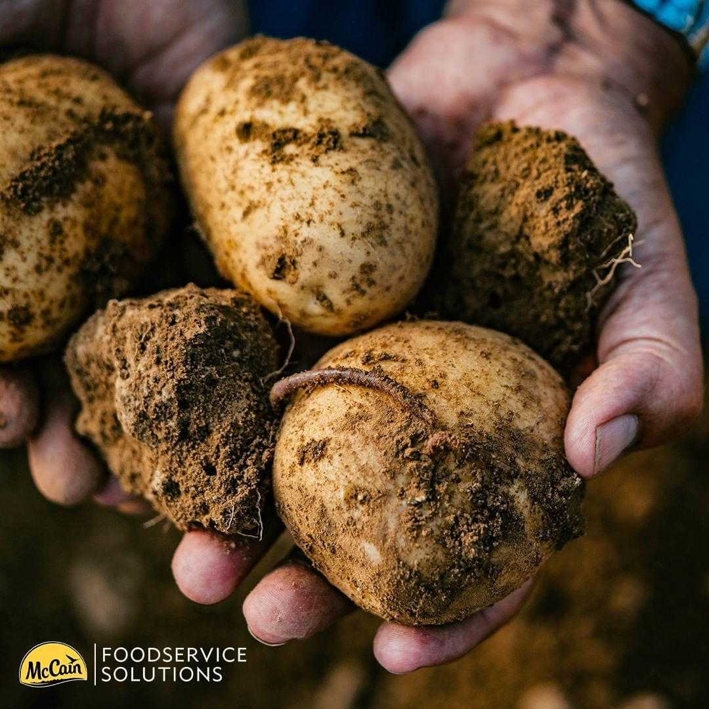

Všetci sme súčasťou našej planéty a sme povinní ju chrániť.🤲 V #McCain chránime Zem po celý rok, nielen dnes, na #DeňZeme!🌍
Zaviazali ame sa vykonávať zodpovedné poľnohospodárstvo s cieľom zachovať biodiverzitu našej pôdy.🌱 Za zdravý rast zemiakov sme vďační aj dážďovkám, ktoré sú ukazovateľmi jej plného zdravia!💪
👉Viac: https://www.mccain-foodservice.sk/about-mccain/ alebo v bio.
#mccainfoodservicesk #CSR #trvaláudržateľnosť #ByťDobrým #RobiťVeciDobre #biodiverzita #environmentfriendly #ecofriendly